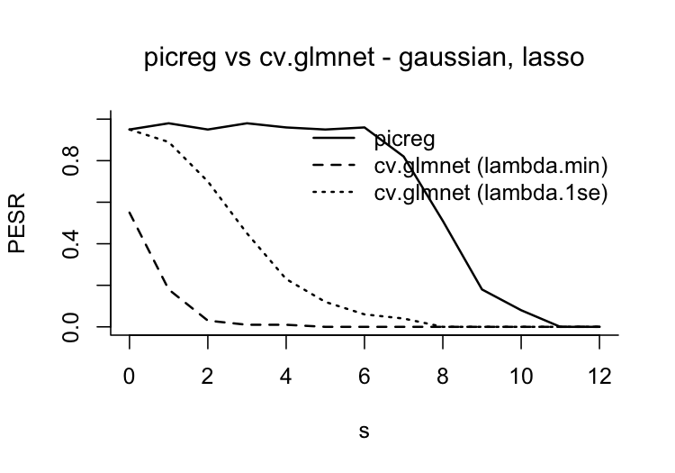

Tuning-free variable selection with the Pivotal Information Criterion.
picreg fits sparse regression, classification and survival models with the Pivotal Information Criterion (PIC) of Sardy, van Cutsem and van de Geer (2026). Like BIC or AIC, PIC fixes its penalty level before looking at the response. Unlike them, it fixes it at the detection boundary: the smallest penalty that keeps pure noise out of the model with probability 1 - \alpha. This penalty depends only on the design matrix, so PIC needs neither cross-validation nor a grid of models, and it selects sparse, interpretable models with a controlled number of false discoveries.
Why PIC?
-
No tuning. The regularization parameter is computed once from
X, without cross-validation, validation set or path selection. - Calibrated false discoveries. When the data carry no signal, PIC returns the empty model with probability 1 - \alpha (95% by default), for every family.
- Sharp support recovery. The probability of recovering exactly the true set of variables shows a phase transition, as in compressed sensing: close to one up to a critical sparsity level, then dropping.
- Parsimony at no cost in prediction. On benchmark datasets, PIC selects the smallest models among state-of-the-art selectors for a similar predictive performance (see below).
-
One interface, six models. Gaussian, binomial, Poisson, exponential, Gumbel and Cox models, with the lasso, SCAD and MCP penalties, behind a
glmnet-style API. The core is written in C++ (RcppArmadillo).
Installation
Install the released version from CRAN:
install.packages("picreg")or the development version from GitHub:
# install.packages("remotes")
remotes::install_github("VcMaxouuu/picreg")Quick start
QuickStartExample is a Gaussian dataset with n = 100 observations and p = 30 predictors, of which only gene_1, …, gene_5 carry signal.
library(picreg)
data(QuickStartExample)
X <- QuickStartExample$X
y <- QuickStartExample$y
fit <- pic(X, y, lambda_seed = 1) # lambda_seed: reproducible calibration
summary(fit)
#> pic fit summary
#> family : gaussian
#> penalty : lasso
#> lambda : 0.3081
#> dimensions: n = 100, p = 30
#> selected : 5 / 30
#> intercept : 0.005989
#>
#> Non-zero coefficients (original scale):
#> variable coefficient
#> gene_3 -0.7606
#> gene_4 -0.6620
#> gene_1 -0.4130
#> gene_5 0.1495
#> gene_2 -0.0571The five active variables are recovered exactly, without any tuning. The fit works with the usual methods:
coef(fit) # sparse coefficients, original scale
predict(fit, newx = X[1:3, ]) # predictions on new data
plot(fit) # lollipop plot of the selected effects
assess(fit, newx = X, newy = y, # predictive and support-recovery metrics
true_features = paste0("gene_", 1:5))Changing the model or the penalty only takes an argument; the calibration can be reused across penalties, since it does not depend on them:
Supported models
| Model | family = |
Response y
|
Loss minimized by PIC |
|---|---|---|---|
| Linear regression | "gaussian" |
numeric | square root of the mean squared error (square-root lasso) |
| Logistic regression | "binomial" |
0/1, logical, or two-level factor | weighted score loss |
| Poisson regression | "poisson" |
non-negative counts | weighted score loss |
| Exponential regression | "exponential" |
non-negative | negative log-likelihood |
| Gumbel location-scale | "gumbel" |
numeric | exponential of the negative log-likelihood, scale profiled out |
| Cox proportional hazards | "cox" |
(time, event) matrix or survival::Surv
|
square root of the negative log partial likelihood (Breslow ties) |
Each model is combined with one of three penalties: "lasso" (\ell_1), "scad" or "mcp". The non-convex penalties reduce the shrinkage bias of the lasso on large coefficients and recover the support at higher sparsity levels.
How PIC chooses the penalty
PIC minimizes
\phi\Bigl(l_n\bigl(g(\beta_0\mathbf{1} + X\boldsymbol\beta)\bigr)\Bigr) + \lambda_\alpha^{\mathrm{PDB}}\, \mathrm{pen}(\boldsymbol\beta),
where l_n is a base loss and (\phi, g) are model-specific transformations. The origin \boldsymbol\beta = \mathbf 0 is a solution as soon as the penalty exceeds \Lambda, the sup-norm of the gradient of the loss at the null fit. PIC sets the penalty at the pivotal detection boundary \lambda_\alpha^{\mathrm{PDB}}, the (1 - \alpha)-quantile of \Lambda under pure noise. The transformations (\phi, g) are chosen so that this quantile does not depend on the unknown intercept or scale: it can be computed from X alone, before the model is fitted.
pic() computes \lambda_\alpha^{\mathrm{PDB}} with one of three methods, through lambda_method:
| Method | Principle | When to use |
|---|---|---|
"mc_exact" (default) |
Monte Carlo under the null model of the family | small to moderate problems |
"mc_gaussian" |
Monte Carlo under the Gaussian limit of the gradient | large n |
"analytical" |
closed-form Bonferroni bound, conservative | very large problems |
pdb_summary(fit) # calibration details and simulated null distribution
plot(fit$lambda_pdb) # null distribution with the selected lambdaPerformance
The results below are reported in Sardy, van Cutsem and van de Geer (2026), and the scripts that produce them are in simulations/.
Calibration under pure noise. On Gaussian data with n = p = 100 and no signal, PIC selected at least one variable in 4% of the datasets, for a target of \alpha = 5\%. Cross-validated lasso (cv.glmnet, lambda.min) did so in 43% of the datasets, EBIC in 22% and BIC in 96%.
Phase transition. Probability of exact support recovery as a function of the number s of active variables (Gaussian model, n = p = 100, non-zero coefficients of magnitude 3 with random signs, 100 replications per s):

Real data. Mean test performance (mean model size in parentheses) over 100 random 70/30 train-test splits (90 for Riboflavin), after an unpenalized refit on the selected variables. BIC and EBIC use forward selection.
| Dataset | n | p | PIC (lasso) | PIC (SCAD) | cv.glmnet | BIC | EBIC |
|---|---|---|---|---|---|---|---|
| Regression, relative test MSE | |||||||
| Prostate cancer | 97 | 8 | 0.435 (3.1) | 0.456 (2.7) | 0.451 (5.9) | 0.454 (3.1) | 0.460 (2.8) |
| Diabetes | 442 | 64 | 0.531 (4.6) | 0.535 (4.7) | 0.536 (17.6) | 0.529 (6.3) | 0.542 (4.7) |
| Riboflavin | 71 | 4088 | 0.411 (6.0) | 0.411 (6.0) | 1.323 (37.5) | 0.754 (40.0) | 0.492 (8.0) |
| Classification, test accuracy | |||||||
| Breast cancer | 569 | 30 | 0.965 (4.5) | 0.950 (3.0) | 0.963 (12.9) | 0.962 (5.2) | 0.963 (4.3) |
| Ionosphere | 351 | 33 | 0.872 (4.6) | 0.867 (4.3) | 0.878 (17.5) | 0.867 (8.0) | 0.864 (6.0) |
| Sonar | 208 | 60 | 0.715 (4.0) | 0.720 (3.3) | 0.735 (19.8) | 0.729 (7.6) | 0.722 (4.4) |
On every dataset, a PIC fit selects the smallest model, with a predictive performance close to the best one.
Main functions
| Task | Functions |
|---|---|
| Fit a model | pic() |
| Inspect a fit |
summary(), coef(), plot()
|
| Predict and evaluate |
predict(), assess()
|
| Penalty calibration |
lambda_pdb(), pdb_summary(), plot(fit$lambda_pdb)
|
| Survival analysis |
predict(type = "survival"), feature_effects_on_survival(), plot_survival_curves(), plot_baseline(), concordance_index()
|
| Diagnostics |
phase_transition(), pdb_asymptotic()
|
Documentation
- Package website
-
Get started: a walk-through of all six models, prediction, calibration and diagnostics (also available with
vignette("vignette", package = "picreg")) - The PIC paradigm: the ideas behind the criterion
- Function reference
Citation
If you use picreg, please cite:
Sardy, S., van Cutsem, M. and van de Geer, S. (2026). The Pivotal Information Criterion. arXiv:2603.04172. https://doi.org/10.48550/arXiv.2603.04172
@article{sardy2026pic,
title = {The Pivotal Information Criterion},
author = {Sardy, Sylvain and van Cutsem, Maxime and van de Geer, Sara},
journal = {arXiv preprint arXiv:2603.04172},
year = {2026},
doi = {10.48550/arXiv.2603.04172}
}Related work:
- van Cutsem, M. and Sardy, S. (2026). Survival of the fittest Cox model: Pivotal variable selection for time-to-event data. arXiv:2510.19374
- van de Geer, S., Sardy, S. and van Cutsem, M. (2026). A pivotal transform for the high-dimensional location-scale model. arXiv:2512.18705
Getting help
Bug reports and feature requests are welcome on the issue tracker.
License
GPL-2. See the GNU General Public License, version 2.